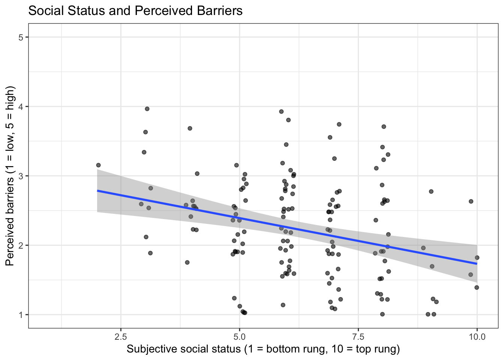
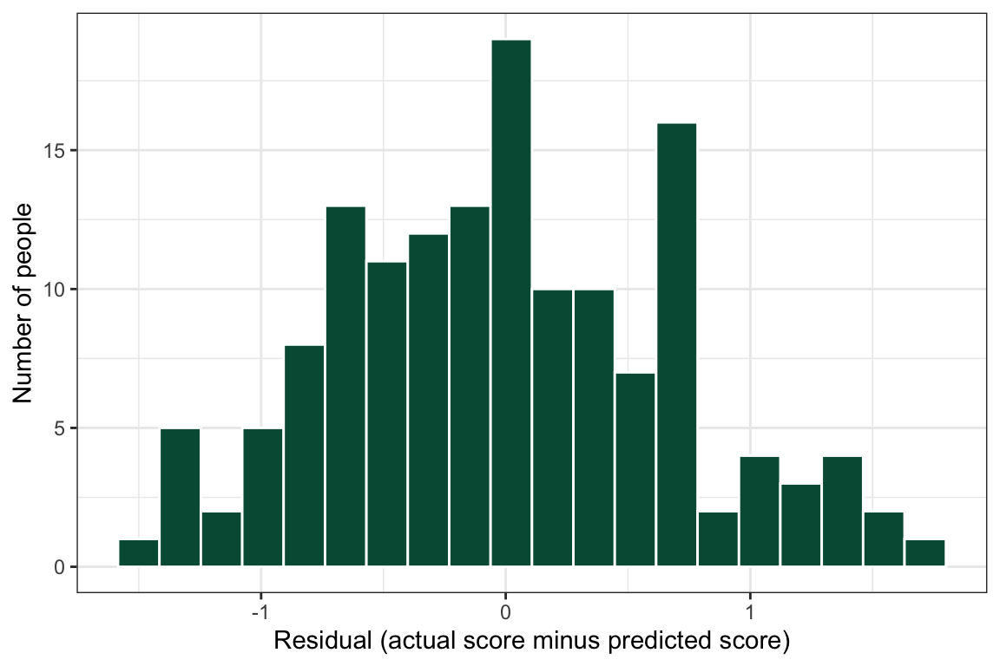
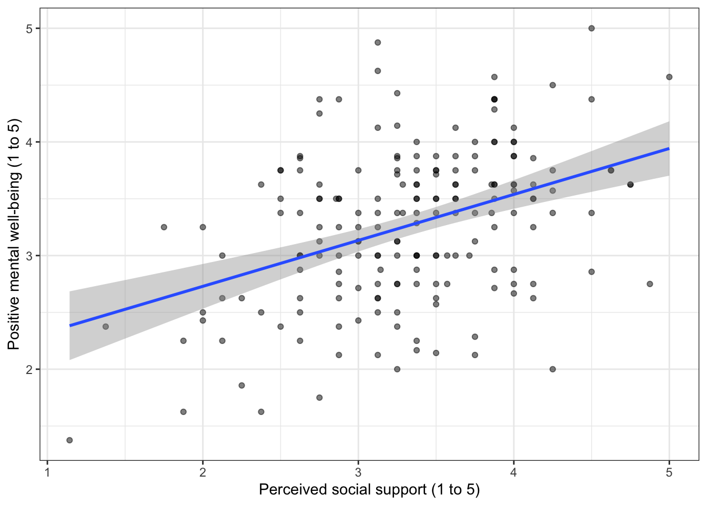
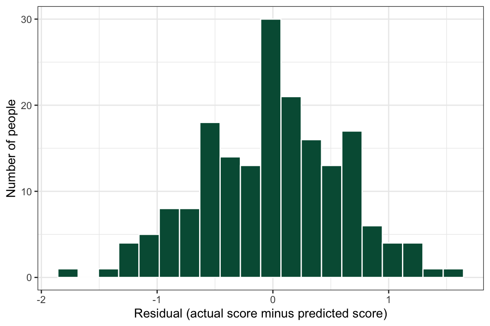

library(tidyverse)19 Relate 3+ Variables
Linear regression: how to run it and report it
Abstract
This chapter teaches researchers to examine a relationship question with a linear regression in R. Researchers start with a simple regression (one predictor and one outcome), learn to read the intercept, the slope, the p-value, and R-squared, and then add more predictors to build a multiple linear regression, including a categorical predictor such as gender. The chapter shows how to check the residuals, how to report a regression in a sentence and in a table, and which common shortcuts to avoid (leaving a category as a number, and cutting a score into two groups). In The Lab, researchers run three models with the lab dataset (one predictor, a binary predictor, and a dummy-coded predictor) and check their own answers. In Your Turn, researchers use a copy-ready template and a checklist for their own research question.
Keywords
linear regression, multiple regression, lm, predictors, residuals, relationship
ResourcesResources: regression
19.1 How This Chapter Works
You will go through this chapter three times, with three different datasets.
| Pass | Section | Dataset | What you do |
|---|---|---|---|
| 1 | The Play | pregnancy (example, simulated) |
Watch the play. Read the code and the output, step by step. |
| 2 | The Lab | lab dataset | Run the play. Run two regressions yourself during the R Lab, then check your own work. Labs are not graded. |
| 3 | Your Turn | your team’s dataset | Call your own play. After you finish all of the R Labs, come back and run the regression for your own research question. |
GoGo: Know your route first
This chapter is the last step on The Analysis Map for a relationship question with three or more variables: one outcome that is a score, and two or more predictors. Make your scatterplot first in Visualize a Relationship.
19.2 📋 The Play
19.2.1 Example Data: pregnancy
The example comes from an FRI Public Health team that surveyed people about health beliefs during pregnancy. One of their questions was: do people with lower social status perceive more barriers to following health advice during pregnancy, after we account for their age and gender?
CautionCaution: This example dataset is simulated
To protect the people who took the team’s survey, the file used in this chapter does not contain their answers. It is a simulated dataset: a computer generated every row so that the variables and their averages look like the team’s data. Use it to learn the play. Do not cite its results.
| Variable | What it is | Values |
|---|---|---|
BARRIERS |
the outcome: perceived barriers (the mean of 9 survey items) | 1 = low to 5 = high |
SSS |
subjective social status (a ladder with 10 rungs) | 1 = bottom to 10 = top |
AGE |
age in years | 18 and up |
GENDER |
gender | 1 = Woman, 2 = Man |
19.2.2 Load and Import
pregnancy <- read.csv("data/pregnancy_beliefs_SIMULATED.csv")
summary(pregnancy) ID AGE GENDER SSS
Length:160 Min. :18.00 Min. :-99.000 Min. :-99.00
Class :character 1st Qu.:19.00 1st Qu.: 1.000 1st Qu.: 5.00
Mode :character Median :22.00 Median : 1.000 Median : 6.00
Mean :28.53 Mean : -0.675 Mean : 2.35
3rd Qu.:34.25 3rd Qu.: 1.000 3rd Qu.: 7.00
Max. :63.00 Max. : 2.000 Max. : 10.00
NA's :4
BARRIERS
Min. :1.000
1st Qu.:1.670
Median :2.220
Mean :2.226
3rd Qu.:2.697
Max. :4.000
Look at the minimum of SSS and GENDER. A value of -99 is not a real answer. It is the code for “Prefer not to answer”, and it has to become missing (NA) before you analyze anything.
19.2.3 Step 1: Get the data ready
pregnancy <- pregnancy |>
mutate(
SSS = na_if(SSS, -99), # -99 becomes NA (missing)
GENDER = na_if(GENDER, -99),
GENDER = factor(GENDER, # tell R that GENDER is a category
levels = c(1, 2),
labels = c("Woman", "Man")))
summary(pregnancy) ID AGE GENDER SSS
Length:160 Min. :18.00 Woman:125 Min. : 2.000
Class :character 1st Qu.:19.00 Man : 32 1st Qu.: 5.000
Mode :character Median :22.00 NA's : 3 Median : 6.000
Mean :28.53 Mean : 6.299
3rd Qu.:34.25 3rd Qu.: 7.750
Max. :63.00 Max. :10.000
NA's :4 NA's :6
BARRIERS
Min. :1.000
1st Qu.:1.670
Median :2.220
Mean :2.226
3rd Qu.:2.697
Max. :4.000
CautionCaution: Don’t leave a category as a number
In the data file, GENDER is stored as the numbers 1 and 2. If you leave it that way, R treats gender as a score, as if a man were “one unit more” than a woman. factor() tells R that the numbers are labels for groups. Do this for every categorical predictor before you run a regression.
19.2.4 Step 2: Look before you test
Always make the plot first (see Visualize a Relationship). BARRIERS is a mean of survey items, so points can stack. Jitter them.
plot_sss_barriers <- ggplot(
data = pregnancy,
mapping = aes(
x = SSS,
y = BARRIERS)) +
geom_jitter(width = 0.15, height = 0.05, alpha = 0.6) +
geom_smooth(method = "lm") +
xlim(1, 10) +
ylim(1, 5) +
ggtitle("Social Status and Perceived Barriers") +
xlab("Subjective social status (1 = bottom rung, 10 = top rung)") +
ylab("Perceived barriers (1 = low, 5 = high)") +
theme_bw()
plot_sss_barriers
The line slopes downward: people who place themselves higher on the ladder report fewer barriers. A regression puts a number on that line and tests it.
19.2.5 Step 3: One predictor (simple regression)
The function is lm(), which stands for linear model. Read the formula BARRIERS ~ SSS as “BARRIERS is predicted by SSS”. The outcome always goes on the left of the ~.
model_simple <- lm(BARRIERS ~ SSS, data = pregnancy)
summary(model_simple)
Call:
lm(formula = BARRIERS ~ SSS, data = pregnancy)
Residuals:
Min 1Q Median 3Q Max
-1.39107 -0.50107 -0.05018 0.49349 1.67425
Coefficients:
Estimate Std. Error t value Pr(>|t|)
(Intercept) 3.04994 0.22107 13.796 < 2e-16 ***
SSS -0.13177 0.03392 -3.884 0.000153 ***
---
Signif. codes: 0 '***' 0.001 '**' 0.01 '*' 0.05 '.' 0.1 ' ' 1
Residual standard error: 0.7037 on 152 degrees of freedom
(6 observations deleted due to missingness)
Multiple R-squared: 0.0903, Adjusted R-squared: 0.08432
F-statistic: 15.09 on 1 and 152 DF, p-value: 0.0001527How to read the output:
(Intercept), Estimate = 3.05. This is where the line starts: the predictedBARRIERSscore for a person whoseSSSis 0. It is rarely interesting by itself.SSS, Estimate = -0.13. This is the slope, and it is the number you care about. For every one rung higher on the ladder, the predictedBARRIERSscore goes down by 0.13 points. A negative slope is a line that goes down. A positive slope is a line that goes up.Pr(>|t|)is the p-value for that slope. Here it is less than .001, which is smaller than .05, so the relationship is statistically significant.Multiple R-squared= 0.09.SSSexplains about 9% of the differences between people inBARRIERS. In survey research, small values like this are common.- At the bottom, R tells you how many people were left out because of missing answers. Report the number of people who were in the model:
nobs(model_simple)= 154.
19.2.6 Step 4: Three predictors (multiple regression)
To add predictors, add them to the formula with +. This answers the team’s real question: is social status still related to barriers after we account for age and gender?
model_multiple <- lm(BARRIERS ~ SSS + AGE + GENDER, data = pregnancy)
summary(model_multiple)
Call:
lm(formula = BARRIERS ~ SSS + AGE + GENDER, data = pregnancy)
Residuals:
Min 1Q Median 3Q Max
-1.50023 -0.48651 -0.02719 0.52032 1.71508
Coefficients:
Estimate Std. Error t value Pr(>|t|)
(Intercept) 3.050186 0.235938 12.928 < 2e-16 ***
SSS -0.126588 0.034820 -3.636 0.000385 ***
AGE -0.002173 0.004318 -0.503 0.615577
GENDERMan 0.130783 0.142325 0.919 0.359684
---
Signif. codes: 0 '***' 0.001 '**' 0.01 '*' 0.05 '.' 0.1 ' ' 1
Residual standard error: 0.6986 on 144 degrees of freedom
(12 observations deleted due to missingness)
Multiple R-squared: 0.09423, Adjusted R-squared: 0.07536
F-statistic: 4.993 on 3 and 144 DF, p-value: 0.002524Each slope now means “the change in BARRIERS for one more unit of this predictor, when the other predictors stay the same.”
SSS(b = -0.13, p < .001): still negative and still significant. Social status is related to barriers even when you compare people of the same age and gender.AGE(b = -0.002, p = .616): the slope is almost zero and the p-value is larger than .05. Age is not related to barriers in this sample.GENDERMan(b = 0.13, p = .360): for a category, R picks the first group (Woman) as the comparison group and reports how different the other group is. Men scored 0.13 points higher than women, and that difference is not significant.- n = 148. A person is dropped if they are missing any variable in the model, so the more predictors you add, the fewer people you keep.
CautionCaution: Related does not mean caused
A regression on survey data tells you that two things go together. It does not tell you that one causes the other. Write “is related to”, “is associated with”, or “predicts”. Do not write “leads to”, “affects”, or “causes”.
19.2.7 Step 5: Check the residuals
A residual is how far each person is from the line. A linear regression works best when the residuals are roughly bell-shaped (normal). This is the “is it normal?” question from the Analysis Map, asked about the residuals and not about the raw scores.
ggplot(data = data.frame(residual = resid(model_multiple)),
mapping = aes(x = residual)) +
geom_histogram(bins = 20, fill = "#005a43", color = "white") +
xlab("Residual (actual score minus predicted score)") +
ylab("Number of people") +
theme_bw()
If your histogram has one long tail or two humps, talk to your instructor before you report the model.
19.2.8 Step 6: Report it
Report the slope (b), the p-value, and the number of people for each predictor, and R-squared for the whole model.
A multiple linear regression (n = 148) showed that subjective social status was negatively associated with perceived barriers (b = -0.13, p < .001), after accounting for age and gender. Age (b = -0.002, p = .616) and gender (b = 0.13, p = .360) were not significantly associated with perceived barriers. Together, the three predictors explained 9% of the variance in perceived barriers (R² = .09).
You can also print the coefficients as a table:
knitr::kable(summary(model_multiple)$coefficients,
digits = 3,
caption = "Table 1. Multiple linear regression predicting perceived barriers.")| Estimate | Std. Error | t value | Pr(>|t|) | |
|---|---|---|---|---|
| (Intercept) | 3.050 | 0.236 | 12.928 | 0.000 |
| SSS | -0.127 | 0.035 | -3.636 | 0.000 |
| AGE | -0.002 | 0.004 | -0.503 | 0.616 |
| GENDERMan | 0.131 | 0.142 | 0.919 | 0.360 |
CautionCaution: Don’t cut your score into two groups
It is tempting to turn a score into “high” and “low” (or 0 and 1) and then run a regression on the 0s and 1s. Don’t. You throw away most of the information in your score, the cut point is arbitrary, and small groups give unstable results. Keep your outcome as a score and use lm(). If your outcome really is a category (yes or no), lm() is the wrong tool: you need a logistic regression, which is not covered in this playbook. Talk to your instructor.
19.3 🏈 The Lab
You watched the play above with the simulated pregnancy dataset (Pass 1). Now run three plays yourself with the lab dataset, a survey about what people believe about mental health.
Ref’s kickoff. This lab is not graded, so I am here to help you check your own work. Try each play before you open my check or the solution. If your answer does not match, that is not a penalty. It is how you find out what to fix.
| Lab play | What is new |
|---|---|
| Draw Left | one predictor: read a slope, a p-value, and R-squared |
| Draw Right | add a binary predictor (two groups) |
| Draw Middle | add a dummy-coded predictor (five groups) |
All three plays use the same outcome: positive mental well-being (WELLBEING, the average of 8 items, 1 to 5). The first predictor is always perceived social support (SUPPORT, the average of 8 items, 1 to 5).
Before you start
- Open your RStudio Project and your lab
.qmdfile. - Load the clean lab data by running this chunk. It runs the cleaning script you built in the earlier labs.
source("lab_prep.R") # creates mh_clean
nrow(mh_clean) # how many people are in the clean dataset?19.3.1 Lab Play 1: Draw Left (one predictor)
Research question: Do people with more social support (SUPPORT) report higher well-being (WELLBEING)?
Your task: Make a scatterplot with SUPPORT on the x axis and WELLBEING on the y axis, with a line of best fit. Then run the simple regression with lm() and summary(). Write down the slope for SUPPORT, its p-value, R-squared, and the number of people in the model.
Resources👀 See the solution
ggplot(data = mh_clean,
mapping = aes(x = SUPPORT, y = WELLBEING)) +
geom_point(alpha = 0.5) +
geom_smooth(method = "lm") +
xlab("Perceived social support (1 to 5)") +
ylab("Positive mental well-being (1 to 5)") +
theme_bw()
model_lab_1 <- lm(WELLBEING ~ SUPPORT, data = mh_clean)
summary(model_lab_1)
Call:
lm(formula = WELLBEING ~ SUPPORT, data = mh_clean)
Residuals:
Min 1Q Median 3Q Max
-1.63903 -0.39229 0.01805 0.43951 1.69087
Coefficients:
Estimate Std. Error t value Pr(>|t|)
(Intercept) 1.92051 0.22781 8.43 9.33e-15 ***
SUPPORT 0.40436 0.06717 6.02 9.13e-09 ***
---
Signif. codes: 0 '***' 0.001 '**' 0.01 '*' 0.05 '.' 0.1 ' ' 1
Residual standard error: 0.6194 on 186 degrees of freedom
Multiple R-squared: 0.163, Adjusted R-squared: 0.1585
F-statistic: 36.24 on 1 and 186 DF, p-value: 9.129e-09nobs(model_lab_1)[1] 18819.3.2 Lab Play 2: Draw Right (add a binary predictor)
Research question: After we account for social support, does well-being differ between People of Color and White respondents?
The survey asked one question about racial/ethnic identity (RACE):
| Code | Answer |
|---|---|
| 1 | American Indian or Alaska Native |
| 2 | Asian |
| 3 | Black or African American |
| 4 | Hispanic or Latino |
| 5 | Middle Eastern or North African |
| 6 | Native Hawaiian or Pacific Islander |
| 7 | White |
| -99 | Prefer Not To Say (already NA in mh_clean) |
A binary predictor has two groups. Your task:
- Use
mutate(),case_when(), andfactor()to make a new variablePOCwith two groups:"White"(code 7) and"Person of color"(codes 1 to 6). List"White"first inlevels =so that it is the comparison group. - Check your work with
count(RACE, POC). - Run
lm(WELLBEING ~ SUPPORT + POC).
Resources👀 See the solution
mh_clean <- mh_clean |>
mutate(POC = factor(case_when(RACE == 7 ~ "White",
RACE %in% 1:6 ~ "Person of color"),
levels = c("White", "Person of color")))
mh_clean |>
count(RACE, POC) # ALWAYS check a transformation# A tibble: 8 × 3
RACE POC n
<dbl> <fct> <int>
1 1 Person of color 4
2 2 Person of color 22
3 3 Person of color 35
4 4 Person of color 19
5 5 Person of color 4
6 6 Person of color 1
7 7 White 100
8 NA <NA> 3model_lab_2 <- lm(WELLBEING ~ SUPPORT + POC, data = mh_clean)
summary(model_lab_2)
Call:
lm(formula = WELLBEING ~ SUPPORT + POC, data = mh_clean)
Residuals:
Min 1Q Median 3Q Max
-1.76792 -0.44243 0.03282 0.45856 1.55819
Coefficients:
Estimate Std. Error t value Pr(>|t|)
(Intercept) 2.06373 0.22806 9.049 < 2e-16 ***
SUPPORT 0.40099 0.06624 6.053 7.93e-09 ***
POCPerson of color -0.27456 0.08967 -3.062 0.00253 **
---
Signif. codes: 0 '***' 0.001 '**' 0.01 '*' 0.05 '.' 0.1 ' ' 1
Residual standard error: 0.6078 on 182 degrees of freedom
(3 observations deleted due to missingness)
Multiple R-squared: 0.2007, Adjusted R-squared: 0.1919
F-statistic: 22.85 on 2 and 182 DF, p-value: 1.397e-09nobs(model_lab_2)[1] 185
CautionCaution: A group difference is not an explanation
This model tells you that two groups differ. It does not tell you why. In public health, differences between racial and ethnic groups point to differences in people’s conditions and experiences (for example, discrimination or access to care). They are not caused by the identity itself. Write “scored lower than”, and use your literature review to discuss why.
19.3.3 Lab Play 3: Draw Middle (add a dummy-coded predictor)
Research question: Two groups hide a lot. Does the difference in well-being look the same for every racial/ethnic group?
A predictor with three or more groups has to be dummy coded: one 0/1 column for every group except the comparison group. You do not need to make those columns. When the predictor is a factor(), lm() makes them for you, and you get one row in the output for each group (compared with the first level).
Your task:
- Count the people in each
RACEgroup. Three groups are very small (codes 1, 5, and 6). Combine them into"Another identity". - Make
RACE_5, a factor with five levels in this order:"White","Asian","Black","Hispanic or Latino","Another identity". - Run
lm(WELLBEING ~ SUPPORT + RACE_5), make a histogram of the residuals, and write one sentence that reports the result.
Resources👀 See the solution
mh_clean |>
count(RACE) # which groups are very small?# A tibble: 8 × 2
RACE n
<dbl> <int>
1 1 4
2 2 22
3 3 35
4 4 19
5 5 4
6 6 1
7 7 100
8 NA 3mh_clean <- mh_clean |>
mutate(RACE_5 = factor(case_when(RACE == 7 ~ "White",
RACE == 2 ~ "Asian",
RACE == 3 ~ "Black",
RACE == 4 ~ "Hispanic or Latino",
RACE %in% c(1, 5, 6) ~ "Another identity"),
levels = c("White", "Asian", "Black",
"Hispanic or Latino", "Another identity")))
model_lab_3 <- lm(WELLBEING ~ SUPPORT + RACE_5, data = mh_clean)
summary(model_lab_3)
Call:
lm(formula = WELLBEING ~ SUPPORT + RACE_5, data = mh_clean)
Residuals:
Min 1Q Median 3Q Max
-1.76985 -0.44573 0.00821 0.41316 1.55859
Coefficients:
Estimate Std. Error t value Pr(>|t|)
(Intercept) 2.0568 0.2292 8.973 3.86e-16 ***
SUPPORT 0.4031 0.0666 6.052 8.18e-09 ***
RACE_5Asian -0.3949 0.1436 -2.749 0.00659 **
RACE_5Black -0.2814 0.1196 -2.352 0.01974 *
RACE_5Hispanic or Latino -0.1027 0.1524 -0.674 0.50135
RACE_5Another identity -0.3169 0.2119 -1.495 0.13660
---
Signif. codes: 0 '***' 0.001 '**' 0.01 '*' 0.05 '.' 0.1 ' ' 1
Residual standard error: 0.6087 on 179 degrees of freedom
(3 observations deleted due to missingness)
Multiple R-squared: 0.2114, Adjusted R-squared: 0.1894
F-statistic: 9.597 on 5 and 179 DF, p-value: 3.946e-08nobs(model_lab_3)[1] 185ggplot(data = data.frame(residual = resid(model_lab_3)),
mapping = aes(x = residual)) +
geom_histogram(bins = 20, fill = "#005a43", color = "white") +
xlab("Residual (actual score minus predicted score)") +
ylab("Number of people") +
theme_bw()
A multiple linear regression (n = 185) showed that perceived social support was positively associated with well-being (b = 0.40, p < .001), after accounting for racial/ethnic identity. Compared with White respondents, Asian (b = -0.39, p = .007) and Black (b = -0.28, p = .020) respondents reported lower well-being; Hispanic or Latino respondents (p = .501) and respondents with another identity (n = 9; p = .137) did not differ significantly (R² = .21).
Ref’s final whistle. That is the end of the lab. Save your .qmd, render it, and back up your .qmd and .R files to the R Labs folder in your ELN before you quit RStudio.
19.4 🏆 Your Turn
Once you finish all of the R Labs, come back here with your team’s dataset and run the regression for your relationship research question.
# 1. every categorical predictor must be a factor (skip this if you have none)
yourdata <- yourdata |> # REPLACE with your clean dataset
mutate(GROUPVARIABLE = factor(GROUPVARIABLE, # REPLACE with your categorical predictor
levels = c(1, 2), # REPLACE with its codes
labels = c("REPLACE", "REPLACE"))) # REPLACE with its labels; the FIRST one is the comparison group
# 2. run the model: OUTCOME ~ PREDICTOR1 + PREDICTOR2 + ...
model_REPLACE <- lm(OUTCOME ~ PREDICTOR1 + PREDICTOR2 + GROUPVARIABLE, # REPLACE every name
data = yourdata)
summary(model_REPLACE) # slopes (Estimate), p-values (Pr(>|t|)), and R-squared
nobs(model_REPLACE) # the number of people in the model
# 3. check the residuals
ggplot(data = data.frame(residual = resid(model_REPLACE)),
mapping = aes(x = residual)) +
geom_histogram(bins = 20) +
theme_bw()
# 4. a table for your report
knitr::kable(summary(model_REPLACE)$coefficients, digits = 3,
caption = "Table 1. REPLACE with a caption that can stand alone.")Then write your results sentence. Use this pattern, and say whether your hypothesis was supported.
A multiple linear regression (n = ___) showed that ______ was ______ (positively / negatively / not significantly) associated with ______ (b = ___, p = ___), after accounting for ______. The predictors explained ___% of the variance in ______ (R² = ___).
19.4.1 Checklist for your RD Report and Final Report
ResourcesOpen the regression checklist
| Criteria | Ask yourself |
|---|---|
| Right test | Does the Analysis Map lead here (one continuous outcome, two or more predictors)? |
| Missing codes | Were codes such as -99 and -50 changed to NA before the model was run? |
| Categorical predictors | Is every categorical predictor a factor() with labels, not a number? Does your text name the comparison group? |
| Outcome kept whole | Is the outcome the full score (not cut into “high” and “low”)? |
| Plot first | Is there a scatterplot of the outcome and your main predictor before the model? |
| Model statement | Does the text say which test was run, the outcome, and every predictor? |
| Each predictor | Do you report b and p for every predictor, including the ones that were not significant? |
| Sample size | Is n reported from nobs(), not from the number of rows in the dataset? |
| R-squared | Is R-squared reported and explained in plain words (percent of the differences in the outcome)? |
| Residuals | Is there a histogram of the residuals, and one sentence on its shape? |
| Interpretation | Does the text connect the result to your hypothesis, with “holding the other predictors constant”? |
| No causal words | Did you avoid “causes”, “leads to”, “impacts”, and “effect of”? |
| Table | Is there a regression table made with kable(), with a caption starting “Table 1.”? |
| Inline numbers | Do the numbers in your sentences come from inline R code, not typed by hand? |
| Referenced in text | Does your results paragraph point to the table and the figure? |